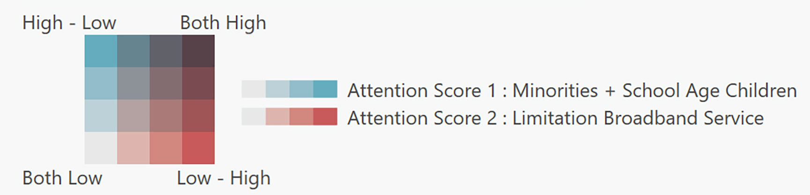

<!DOCTYPE html><html><head>
    <meta charset='utf-8'/>
         <title>Rivas</title>   
         <style>
          html { height: 100% }
          body { height: 100%; margin: 0; padding: 0;}
          #map{ height: 100% }
        </style>
        <style>
            .my-label{ all: revert;color: rgb(59, 58, 58);font-size:0.001;font-weight: 1;fillColor: none;
                        fillOpacity: 0;background-color: none;border-color: none;background: none;border: 0px;box-shadow: none;
                        margin: 0px;cursor: none;direction: 'left';interactive: false;fill: false; }
            .info { padding: 6px 8px; font: 14px/16px Arial, Helvetica, sans-serif; background: white; background: rgba(255,255,255,0.8); box-shadow: 0 0 15px rgba(0,0,0,0.2); border-radius: 5px; } .info h4 { margin: 0 0 5px; color: #777; }
            .digitaldivide_legend { text-align: left; line-height: 23px; font-size: 12px;color: #555; background-color: #f0f0f4;float:left;
            width:450px;overflow-y: auto;height: 500px;} .digitaldivide_legend i { width: 18px; height: 18px; float: left; margin-right: 8px; opacity: 1; }
            .broadband_legend { text-align: left; line-height: 22px; font-size: 12px;color: #555; background-color: #f0f0f4; float:left;
            width:450px;overflow-y: auto;height: 500px;} .broadband_legend i { width: 18px; height: 18px; float: left; margin-right: 8px; opacity: 1; }</style>
             <!-- Load jQuery and PapaParse to read data from a CSV file -->
            <script src="https://code.jquery.com/jquery-3.5.1.min.js"></script>
            <script src="https://cdn.jsdelivr.net/npm/papaparse@5.3.0/papaparse.min.js"></script>
            <link rel="stylesheet" href="https://unpkg.com/leaflet@1.7.1/dist/leaflet.css" />
            <script src="https://unpkg.com/leaflet@1.7.1/dist/leaflet.js"></script>
            <script>(function(i,s,o,g,r,a,m){i['GoogleAnalyticsObject']=r;i[r]=i[r]||
                     function(){(i[r].q=i[r].q||[]).push(arguments)},i[r].l=1*new Date();a=s.createElement(o),
                                m=s.getElementsByTagName(o)[0];a.async=1;a.src=g;m.parentNode.insertBefore(a,m)
                                })(window,document,'script','//www.google-analytics.com/analytics.js','ga');
            ga('create', 'UA-40454900-1', 'calvinmetcalf.github.io');
            ga('send', 'pageview');
            </script>
            <div id="map"></div>
            <script src="dist/shp.min.js"> </script>
            <script>

 //----------------------------layers coded--------------------------------------------------------

    var BaseMap= L.tileLayer('https://api.mapbox.com/styles/v1/{id}/tiles/{z}/{x}/{y}?access_token=pk.eyJ1IjoibWFwYm94IiwiYSI6ImNpejY4NXVycTA2emYycXBndHRqcmZ3N3gifQ.rJcFIG214AriISLbB6B5aw',
                            {maxZoom: 28,attribution: 'Map data &copy; <a href="https://www.openstreetmap.org/copyright">OpenStreetMap</a> contributors, ' +
                            'Imagery © <a href="https://www.mapbox.com/">Mapbox</a>',id: 'mapbox/streets-v11',tileSize: 512,zoomOffset: -1});   

    var geo = L.geoJson({features:[]}, { weight: 2, dashArray: '3, 3', dashOffset: '0', color: 'white', fillColor: '#f03',fillOpacity: 0 });
    var geo_digital = L.geoJson({features:[]}, {style: digital_style,  });
    var geo_african = L.geoJson({features:[]}, {style: african_style,  });
    var geo_hispanic = L.geoJson({features:[]}, {style: hispanic_style,  });
    var geo_school = L.geoJson({features:[]}, {style: school_style,  });
    var geo_broadband = L.geoJson({features:[]}, {style: broadband_style,  });
    //Load data from zip folders
    var boundry = 'files/ASL_30-20201208T220924Z-001.zip';
    var digital_divide_data='files/Digital Divide.zip';
    var african_american_data = 'files/African_American-20210205T195541Z-001.zip';
    var hispanics_data = 'files/Hispanics-20210205T195615Z-001.zip';
    var school_age_data = 'files/School_Age_Children-20210205T195636Z-001.zip';
    var braodband_data = 'files/Braodband_Service_Level-20210205T195544Z-001.zip';
    //Add data to geojson layer
    shp(boundry).then(function(data){
            geo.addData(data);
            });
    shp(digital_divide_data).then(function(data){
            geo_digital.addData(data);
            });
    shp(african_american_data).then(function(data){
            geo_african.addData(data);
            });
    shp(hispanics_data).then(function(data){
            geo_hispanic.addData(data);
            });
    shp(school_age_data).then(function(data){
            geo_school.addData(data);
            });
    shp(braodband_data).then(function(data){
            geo_broadband.addData(data);
            });
    //Create layer groups
    var digital_divide = L.layerGroup();
    var african_american = L.layerGroup();
    var hispanics = L.layerGroup();
    var school_age = L.layerGroup();
    var braodband = L.layerGroup();
    //assign data to respective layers
    geo_digital.addTo(digital_divide);
    geo_african.addTo(african_american);
    geo_hispanic.addTo(hispanics);
    geo_school.addTo(school_age);
    geo_broadband.addTo(braodband);
    //assign boundry to each layer
    geo.addTo(digital_divide);
    geo.addTo(african_american);
    geo.addTo(hispanics);
    geo.addTo(school_age);
    geo.addTo(braodband);  

    var m= L.map('map',{ center: [36.388119, -121.828036],zoom: 8,layers: [BaseMap,digital_divide]});  
    var baseMaps = {"Digital Divide Assessment in CA AD 30": digital_divide,
    "Attention Score 1 - % of School Age Children": school_age,
    "Attention Score 1 - % of Hispanic Residents": hispanics,
    "Attention Score 1 - % of African American Population": african_american,
    "Attention Score 2 - Braodband Service Level": braodband,};
    var info2 = L.control();
    var overlayMaps = {};
    L.control.layers(baseMaps, overlayMaps,{ collapsed:false,
    position:'topright'}).addTo(m);

    setTimeout(function(){ geo.bringToFront(); },1000);

// Read markers data from data.csv
    $.get('files/Cities.csv', function(csvString) {
// Use PapaParse to convert string to array of objects
    var data = Papa.parse(csvString, {header: true, dynamicTyping: true}).data;
// For each row in data, create a marker and add it to the map
// For each row, columns `Latitude`, `Longitude`, and `Title` are required
    for (var i in data) {
            var row = data[i];
            var myIcon = L.divIcon({ 
            iconSize: new L.Point(150, 10,{fillColor: '#f03',fillOpacity: 0}), 
            html: row.name,
            className: "my-label"
    });
    L.marker([parseFloat(row.intptlat), parseFloat(row.intptlon)],  {icon: myIcon})
    .bindTooltip().addTo(m); 
    };})
//----------------------------------------
    var hispanics_legend = L.control({position: 'topleft'});
    hispanics_legend.onAdd = function (m) {
        var div = L.DomUtil.create('div', 'info digitaldivide_legend'),
            grades = [98.88,77.25,55.06,28.34,0],
            labels = [],
            from, to;
        for (var i = 0; i < grades.length-1; i++) {
            to = grades[i];
            from = grades[i+1];
            labels.push('<i style="background:' + hispanic_getColor(from +1) + '"></i> ' +
				 (to ? '&le;' + to : '+') );
        }
        div.innerHTML = '<h2 style="color:black">Internet Access Map - CA Assembly District 30</h2 style="color:black">'+'<h4  style="color:black">Map Instruction:</h4>'+
            '<p style="font-size:11px"><b>Attention Score 1</b>  is a linear combination of the percentages of school age children, Hispanic population, African American population and residents with below-poverty'+
            ' earning using the <a href="https://www.census.gov/acs/www/data/data-tables-and-tools/data-profiles/2018/">American Community Survey 2018 data.</a> Using Principal Component'+
            '<br>Analysis technique, first we statistically estimated the initial value for each neighborhood<br>which is a linear combination of the aforementioned four components.<br>Then we normalized this value to a score that ranges between 0 and 100.</p>'+
            '<p style="color:black"><b>This map presents the second component of this core, percentage of Hispanic population.</b></p>'+
        '<h4 style="color:black">California State Assembly District 30 Boundary</h4>'+''+
        '<h4 style="color:black">Attention Score 1 - Component 2</h4>'+
        '<p>% of Hispanic Residents</p>' +labels.join('<br>');
        return div;
    };   
//----------------------------------------------------------
    var digitaldivide_legend = L.control({position: 'topleft'});
    digitaldivide_legend.onAdd = function (m) {
        var div = L.DomUtil.create('div', 'info digitaldivide_legend'),
            grades = [30.54,21.07,15.05,1.65,0],
            labels = [],
            from, to;
        for (var i = 0; i < grades.length-1; i++) {
            to = grades[i];
            from = grades[i+1];
            labels.push(
                '<i style="background:' + digital_getColor(from +1) + '"></i> ' +
				from + (to ? '&ndash;' + to : '+') );
        }
        div.innerHTML = '<h2 style="color:black">Internet Access Map - CA Assembly District 30</h2 style="color:black">'+
            '<p style="font-size:8px;text-align:right">© copyright '+
            '<a href="https://www.sjsu.edu/urbanplanning/research-and-public-engagement/savi.php">The SAVi Center at SJSU</a></p>'+
            '<h4 style="color:black">Map Instruction:</h4>'
            +'<p style="font-size:11px"><b>Digital Divide Assessment</b> in California Assembly District 30 is done through a spatial analysis of the bivariate relationship using two primary Attention Scores and the following<b> Matrix.</b>'
            +''
            +'<p style="font-size:11px"><b>Attention Score 1</b> draws attention to broadband users through making a linear combination of the percentages of school age children, Hispanic population, African American population and residents with below-poverty'+
            ' earning using the <a href="https://www.census.gov/acs/www/data/data-tables-and-tools/data-profiles/2018/">American Community Survey 2018 data.</a> Using Principal Component'+
            'Analysis technique, first we statistically estimated the initial value for each neighborhood and then normalized this value to a 0 to 100 score. Each component of this score is also mapped in a separate map.</p>'+
            '<p style="font-size:11px"><b>Attention Score 2</b> draws attention to internet connection limitation. This indicator is based on the number of providers and speeds available through Fixed Broadband deployment '+
            '<a href="https://www.fcc.gov/general/broadband-deployment-data-fcc-form-477?contrast=highContrast">data</a>released by the Federal Communication Commission and '+
            '<a href="https://www.census.gov/acs/www/data/data-tables-and-tools/data-profiles/2018/">Herries (2020)</a> methodology.'+
            'We identified four types of broadband service availability which each type then received a score for the bivariate spatial analysis. This score is designed to increase in a neighborhood when broadband service availability is limited. The types and their scores are as follows:'+
            '<ul><li>Unserved, low population : 4</li><li>Under-served : 3</li><li>Under-served, low population : 2</li><li>Well-served : 1</li></ul> '+
            '<p>Broadband Service Level is also mapped separately in map 5.</p>'+
            '<p>Ultimately the <b>Digital Divide</b> layer illustrates a bivariate spatial relationship (applying the above-mentioned matrix) between these two scores and brings <b>attention</b> to the neighborhoods that both values are high.</p>'+
            '<p>Both <b>Attention Scores</b> and <b>Broadband Service Level</b> for each neighborhood are available in the pop-up window. Viewers can click on each neighborhood to see these values</p>'+
            '<p>© copyright '+
            '<a href="https://www.sjsu.edu/urbanplanning/research-and-public-engagement/savi.php">The SAVi Center at SJSU</a></p>'+
            '<p style="color:black"><b>Legend:</b></p>'+
            '<h4 style="color:black">California State Assembly District 30 Boundary</h4>'+''+
            '<h4 style="color:black">Digital Divide</h4>'+'';
        return div;
    };
    digitaldivide_legend.addTo(m); 
    currentLegend = digitaldivide_legend;
//---------------------------------------------------------
    var schooleage_legend = L.control({position: 'topleft'});
    schooleage_legend.onAdd = function (m) {
        var div = L.DomUtil.create('div', 'info digitaldivide_legend'),
            grades = [30.54,21.07,15.05,1.65,0],
            labels = [],
            from, to;
        for (var i = 0; i < grades.length-1; i++) {
            to = grades[i];
            from = grades[i+1];
            labels.push('<i style="background:' + school_getColor(from +1) + '"></i> ' +
				 (to ? '&le;' + to : '+') );
        }
        div.innerHTML = '<h2 style="color:black">Internet Access Map - CA Assembly District 30</h2>'+'<h4 style="color:black">Map Instruction:</h4>'+'<p style="font-size:11px"><b>Attention Score 1</b>  is a linear combination of the percentages of school age children,<br> Hispanic population, African American population and residents with below-poverty<br>'+
            ' earning using the <a href="https://www.census.gov/acs/www/data/data-tables-and-tools/data-profiles/2018/">American Community Survey 2018 data.</a> Using Principal Component'+
            '<br>Analysis technique, first we statistically estimated the initial value for each neighborhood<br>which is a linear combination of the aforementioned four components.<br>Then we normalized this value to a score that ranges between 0 and 100.</p>'+
            '<p style="color:black"><b>This map presents the first component of this core, percentage of school</br> age children.</b></p>'+
        '<h4 style="color:black">California State Assembly District 30 Boundary</h4>'+''+' <h4 style="color:black">Attention Score 1 - Component 1</h4>'+
        '<p>% of School Age Children</p>' +labels.join('<br>');
        return div;
    };
//--------------------------------------------------------
    var african_legend = L.control({position: 'topleft'});
    african_legend.onAdd = function (m) {
        var div = L.DomUtil.create('div', 'info digitaldivide_legend'),
            grades = [24.60,10.27,3.53,1.23,0],
            labels = [],
            from, to;
        for (var i = 0; i < grades.length-1; i++) {
            to = grades[i];
            from = grades[i+1];
            labels.push('<i style="background:' + african_getColor(from +1) + '"></i> ' +
				 (to ? '&le;' + to : '+') );
        }
        div.innerHTML = '<h2 style="color:black">Internet Access Map - CA Assembly District 30</h2>'+'<h4 style="color:black">Map Instruction:</h4>'
            +'<p style="font-size:11px"><b>Attention Score 1</b>  is a linear combination of the percentages of school age children,<br> Hispanic population, African American population and residents with below-poverty<br>'+
            ' earning using the <a href="https://www.census.gov/acs/www/data/data-tables-and-tools/data-profiles/2018/">American Community Survey 2018 data.</a> Using Principal Component'+
            '<br>Analysis technique, first we statistically estimated the initial value for each neighborhood<br>which is a linear combination of the aforementioned four components.<br>Then we normalized this value to a score that ranges between 0 and 100.</p>'+
            '<p style="color:black"><b>This map presents the third component of this score, percentage of </br>African-American population.</b></p>'+
        '<h4 style="color:black">California State Assembly District 30 Boundary</h4>'+''+' <h4 style="color:black">Attention Score 1 - Component 3</h4>'+
        '<p>% of African American Population</p>' +labels.join('<br>');
        return div;
    };

//----------------------------------------------------------
    var broadband_legend = L.control({position: 'topleft'});
    broadband_legend.onAdd = function (m) {
        var div = L.DomUtil.create('div', 'info broadband_legend'),
            grades = ["Unserved, low population","Under-served","Under-served, low population","Well-served"],
            //grades = ["Unserved, low population","Under-served","Under-served, low population","Well-served"]
            labels = [],
            from, to;
        for (var i = 0; i < grades.length; i++) {
            from = grades[i];
            labels.push('<i style="background:' + broadband_getColor(from) + '"></i> ' +
				 (from) );
        }
        div.innerHTML = '<h2 style="color:black">Internet Access Map - CA Assembly District 30</h2>'+'<h4 style="color:black">Map Instruction:</h4>'+
            '<p style="font-size:11px"><b>Attention Score 2</b>  indicates the severity of access limitation to broadband service in a</br> neighborhood.This indicator is based on the number of providers and speeds available</br>(applying '+
            '<a href="https://www.census.gov/acs/www/data/data-tables-and-tools/data-profiles/2018/">Herries (2020)</a> methodology) through Fixed Broadband deployment '+
            '<a href="https://www.fcc.gov/general/broadband-deployment-data-fcc-form-477?contrast=highContrast">data</a></br> released by the Federal Communication Commission. Using '+
            '<a href="https://www.census.gov/acs/www/data/data-tables-and-tools/data-profiles/2018/">Herries (2020)</a> methodology </br>'+
            'we identified four categories for the level of broadband service which each category</br>then received a score for the bivariate spatial analysis. This value increases when a</br>neighborhood is not covered with enough broadband service providers and sufficient speed.</br> These scores are as followed:'+
            '<ul><li>Unserved, low population : 4</li><li>Under-served : 3</li><li>Under-served, low population : 2</li><li>Well-served : 1</li></ul> '+
            '<p style="color:black"><b>This map presents these broadband service level categories.</b></p>'+
        '<h4 style="color:black">California State Assembly District 30 Boundary</h4>'+''+
        '<h4 style="color:black">Attention Score 2 - Boardband Service Level</h4>'+labels.join('<br>');
        return div;
    };

    //---------------switching logic-------------------
m.on('baselayerchange', function (eventLayer) {
    if (eventLayer.name === 'Digital Divide Assessment in CA AD 30') {
        m.removeControl(currentLegend );
        currentLegend = digitaldivide_legend;
        digitaldivide_legend.addTo(m);
    }
    else if  (eventLayer.name === 'Attention Score 1 - % of School Age Children') {
        m.removeControl(currentLegend );
        currentLegend = schooleage_legend;
        schooleage_legend.addTo(m);
    }
    else if  (eventLayer.name === 'Attention Score 1 - % of Hispanic Residents') {
       m.removeControl(currentLegend );
        currentLegend = hispanics_legend;
        hispanics_legend.addTo(m);
    }
    else if  (eventLayer.name === 'Attention Score 1 - % of African American Population') {
       m.removeControl(currentLegend );
        currentLegend = african_legend;
        african_legend.addTo(m);
    }
    else if  (eventLayer.name === 'Attention Score 2 - Braodband Service Level') {
       m.removeControl(currentLegend );
        currentLegend = broadband_legend;
        broadband_legend.addTo(m);
    }
  })
//--------------------functions for the colors-------------------------
    function highlightFeature2(e) {
        var layer = e.target;
        layer.setStyle({
            weight: 2,
            color: '#FF0000',
            dashArray: '',
            fillOpacity: 0
        });
        info2.update(layer.feature.properties);
    }
    function resetHighlight2(e) {
            geo.resetStyle(e.target);
        }
// get color depending on population density value
    function digital_getColor(score1, score2) {
        return  (score1 > 41.072798 && score2 > 3.072798) ? '#59424a' :  //[1,4] no issue
        (score1 > 34.072798 && score2 > 3.072798)   ? '#7d4f59' : //[2,4]
        (score1 > 37.0 && score2 > 2.9)   ? '#886f75' :  //[2,3]
        (score1 > 24.072798 && score2 > 3.072798)   ? '#a25557' : //[3,4] //no issue
        (score1 > 14.072798 && score2 > 3.072798)  ? '#c85a59 ' : //[4,4] no issue
        (score1 > 38.072798 && score2 > 1.972798)  ? '#668691' :  //[1,2] no issue 
        (score1 > 38.072798 && score2 == 1.00)  ? '#65acbe' : //[1,1]
        (score1 > 28.072798 && score2 == 1.00)  ? '#92becb' : //[2,1]
        (score1 > 30.072798 && score2 == 2)  ? '#8b9398' : // [1,3]
        (score1 > 18.072798 && score2 == 2)  ? '#b4a2a2' : // [2,3]
        (score1 > 19.072798 && score2 == 3)  ? '#a97c7b' : // [3,3]
        (score1 > 18.032798 && score2 > 0.972798)  ? '#bdd1da' : //[3,1]
        (score1 > 16.072798 && score2 == 1.00)  ? '#ecf1ee' :  //
        (score1 > 5  && score2 == 1)  ? '#ecf1ee' : //[4,1]
        (score1 >= 0 && score2 >=0)  ? '#ddb6af' : //[4,2]     
        '#ddb6af';                
    }
    function digital_style(feature) {
        return {
            weight: 1,
            opacity: 1,
            color: 'grey',
            dashArray: '01',
            fillOpacity: 10,
            fillColor: digital_getColor(feature.properties.Score_1,feature.properties.Score_2)
        };
    }
// get color depending on population density value
    function african_getColor(BSL) {
        return  BSL > 10.27  ? '#5eb0c2' :   
        BSL >  3.53   ? '#90bec7' :
        BSL > 1.23   ? '#b6d3d8' :
        BSL >= 0  ? '#e6e6e6' :  
        console.log(BSL)                       
    }
    function african_style(feature) {
        return {
            weight: 1,
            opacity: 1,
            color: 'grey',
            dashArray: '01',
            fillOpacity: 2,
            fillColor: african_getColor(feature.properties.pct_blk)
        };
    }
// get color depending on population density value
    function hispanic_getColor(BSL) {
        return  BSL > 77.25  ? '#5eb0c2' :   
        BSL >  55.06   ? '#90bec7' :
        BSL > 28.34   ? '#b6d3d8' :
        BSL > 0  ? '#e6e6e6' :  
        console.log(BSL)                       
    }
    function hispanic_style(feature) {
        return {
            weight: 1,
            opacity: 1,
            color: 'grey',
            dashArray: '01',
            fillOpacity: 2,
            fillColor: hispanic_getColor(feature.properties.pct_hisp_2)
        };
    }
// get color depending on population density value
    function school_getColor(BSL) {
        return  BSL > 21.07  ? '#5eb0c2' :   
        BSL >  15.05   ? '#90bec7' :
        BSL > 1.65   ? '#b6d3d8' :
        BSL > 0  ? '#e6e6e6' :  
        console.log(BSL)                       
    }
    function school_style(feature) {
        return {
            weight: 1,
            opacity: 1,
            color: 'grey',
            dashArray: '01',
            fillOpacity: 2,
            fillColor: school_getColor(feature.properties.pct_schage)
        };
    }  
// get color depending on population density value
    function broadband_getColor(BSL) {
        return BSL === "Unserved, low population"   ? '#c85a59' :  
        BSL === "Under-served"  ? '#d98582' :
        BSL === "Under-served, low population"  ? '#ddb6af' :    
        BSL === "Well-served"   ? '#e6e6e6' :    
                 '#33322c' ; 
        console.log(BSL)                       
    }
    function broadband_style(feature) {
        return {
            weight: 1,
            opacity: 1,
            color: 'grey',
            dashArray: '01',
            fillOpacity: 2,
            fillColor: broadband_getColor(feature.properties.BSL)
        };
    }    


</script>
</body>
</html>